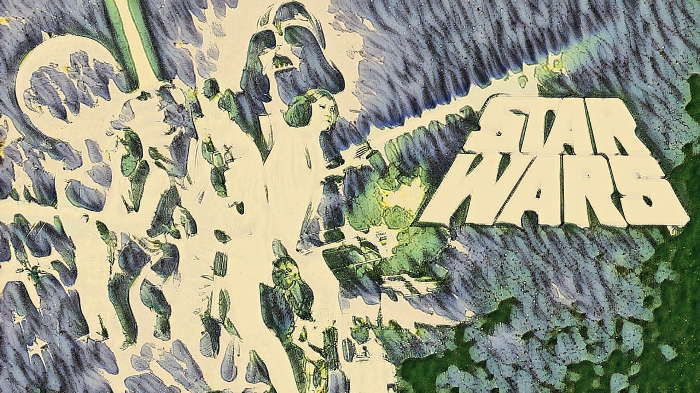

Episode IV
A world at war. In the middle of this war of space, a heroine was battling evil at the hands of her nemesis, Darth Vader. She wanted to go home to her homeworld. But as the plot unfolded, a super appears on screen: "Protect yourself! Save yourself!" With the system to launch the super, Princess Leia couldn't stay up all night. Her friend Luke Skywalker enters her life to give her the ability to move to the edge. And as they do, he learns that instead of building a spaceship, he should build a world...
